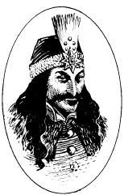

弗拉德·采佩什（德古拉）
采佩什，弗拉德（德古拉）（Tepes, Vlad(Dracula)）
吸血鬼，混乱邪恶
力量： 19
敏捷： 18
体质： 19
智力： 13
灵知： 12
魅力： 14
防御等级： -4
移动力： 12，F18（A）
等级/生命骰数：13
生命值：90
零级命中率：7
攻击次数：1
攻击/伤害：1d6（因力量+7）
特殊攻击：见下文
特殊防御：见下文
魔法抗力：25%
战斗：放眼全世界，也没有任何比吸血鬼德古拉更令人恐惧的生物，他被一些人称为黑暗王子。除了他强大的力量外，这位亡灵领主还具有野兽般的狡诈和丰富的战斗经验。虽然欺骗甚至击败他并非不可能，但他从不会忘记敌人，也不会被同一个陷阱击败两次。
德古拉在许多方面与《怪物图鉴》中介绍的吸血鬼一样。然而，他们存在一些重要的区别。
德古拉比普通的吸血鬼更强壮，他的力量为19。这使他在攻击检定上得到+2 奖励，伤害检定上得到+4
奖励。因此，德古拉在战斗中的每一击都会造成1d6+7的伤害。
德古拉对魔法武器和法术的抵抗力比他的同类更强。他有25%的基础魔法抗力，并且只会被+3或更强的附魔武器击中。
保护他免受伤害的魔力也使德古拉魅惑人类的力量更甚。任何与德古拉对视的人类都会遭到他的凝视攻击。由于德古拉具备的非常魔力，受害者在豁免检定上要承受-4的惩罚。
德古拉最可怕的能力之一是他超人的速度。他总是能像被施加了加速术那样行动，尽管他不常展示该能力，更愿意将它作为留给敌人的意外惊喜。其先攻投掷获得-2奖励，并且移动力及攻击速度加倍。此外，德古拉拥有更快的再生速度，每轮可以再生6点生命值。
德古拉比起其他吸血鬼更能承受流水和阳光的伤害。如果德古拉被浸泡在流动的水中，他在第五轮才会被摧毁。而阳光无法摧毁德古拉，他可以在白天自由行动。虽然每天24小时必须在棺材内休息8小时，但他的休息时间未必需要在白天。在日间活动时，德古拉会受到严重的限制。他无法变化形体，召唤动物，魅惑人类。他的魔法抗力和对普通武器的免疫也会消失。尽管如此，他依然保有强大的力量，绝非砧板上的鱼肉。
德古拉和ADND游戏中传统吸血鬼之间最重要的区别是，黑暗王子不采用能量吸取的攻击方式。相反，他以活人的血为生，就像《鸦阁》战役设定中的诺斯费拉图一样。德古拉的吸血攻击在各方面都与诺斯费拉图的攻击相同。德古拉也有对他的受害者进行催眠控制的能力，就像诺斯费拉图那样。
德古拉的外表会发生明显的变化，尽管这些外观上的改变对他的游戏数据没有影响。虽然伯爵能够依靠啮齿动物和其他动物的血液几乎无限地生存下去，但这不足以支撑他的生命。当被迫这样做的时，德古拉会显得很衰老（尽管如此，他也绝非虚弱）。当他有充足的人血供应时，他就会显得生机勃勃，身体健壮。在棺材里睡觉时，德古拉呈现出死人的苍白；对他的身体进行任何检查只会得出他是一具尸体的结论。德古拉睡觉时睁着眼睛，即使在他休息时也能看到他周围发生的一切。
巢穴：黑暗王子的老宅是位于喀尔巴阡山高处的德古拉城堡。在这个可怖的防御工事范围内，德古拉是里面所有生物的绝对主宰。
除非德古拉允许，否则城堡里的任何门都不会为陌生人的手打开。在游戏中，所有的门都被视为施加了法师之锁。任何入侵者强行通过一扇密封之门的行为都会被可怕的吸血鬼立即意识到。
这个邪恶的中心使德古拉的魔法力量大大增强。进入城堡的来访者会放弃对吸血鬼的魅惑凝视的豁免。已经被吸血鬼咬过的生物（如诺斯费拉图的描述那样）会立即成为德古拉的棋子，必须无条件地服从他的意志，直到他的标记从脖子上移除或逃离城堡。
背景：德古拉最初以弗拉德.采佩什（发音为，TSE-pesh）而闻名于世（也令人胆寒）。采佩什的名字来自他的父亲弗拉德-德拉库里，他于1431年出生，死于1447年。尽管诸多暴行都归功于他，但不可否认的是，在他担任瓦拉几亚大公期间，采佩什将奥斯曼土耳其人赶出了他的家园，并反抗了匈牙利人的统治。
采佩什和他的弟弟拉杜都作为人质在土耳其人中间生活了几年。在这段时间里，这位年轻的王子学习到了远超他所想知道的恐怖和压迫的知识。
1448年，弗拉德.采佩什登上了瓦拉几亚的王位，但后来他被击败。采佩什逃到了摩尔达维亚，在那里他向匈牙利人中寻求庇护。1456年，特佩斯回到了自己的家乡，再次登上了王位，并一直保持统治到1462年。在这长达五年的专制统治中，特佩斯屠杀了成千上万的土耳其人，发明出无数残酷的酷刑，并建成了令人生畏的德古拉城堡，该城堡至今仍是他的巢穴。
最后，在1462年，奥斯曼人袭击了瓦拉几亚，将特佩斯赶出了他的家园。这位逃亡的王子越过边界逃到了匈牙利，在那里被马加什.科韦努斯国王软禁。1474年，经过12年的囚禁，特佩斯被释放。在接下来的两年内，他几乎无数的敌人都能找到到他并将其消灭。
当然，这并不是这个恶魔的结局。奄奄一息的他在绝望中发誓，他愿用他认为神圣的一切来换取为自己复仇的机会。红色死神听到了他的恳求并作出了回应。自此，德古拉成为了哥特地球上最危险和最忠实的邪恶仆人之一。
在接下来的几个世纪里，德古拉和任何阴影中的生物一样，作为红死魔的忠实奴仆行动。他在整个巴尔干地区传播痛苦和恐怖。这位强大的吸血鬼的所作所为无比可怕，以至于直到今天，喀尔巴阡山脉的居民在听到德古拉这个名字时，都情不自禁地要在自己身上画十字。
19世纪初，德古拉发现他每晚的血腥盛宴已经引起了一个被称为守护者（Die W?chtern）或称监视者（The
Watchers）的卡巴达组织的注意。尽管德古拉竭尽全力，但他只杀死了该组织的很多低级成员，没能揭露该组织背后的三名神秘学者的真面目。最终，德古拉也只能为他们的努力所退却。
来自守护者的压力促使德古拉在最近离开他的家乡，前往英格兰。最终，当亚伯拉罕.范.海辛，一名守护者的重要成员，在得知他的计划后带领一队吸血鬼猎人挺身对抗吸血鬼伯爵，并在最后几乎消灭了这位黑暗王子。事实上，吸血鬼失败的如此彻底，以至于范海辛和卡巴达结社的其他成员确信，世界已经永远摆脱了德古拉。
现在，德古拉还在等待和谋划。哥特地球还没有听到他最后咽气的声音。
